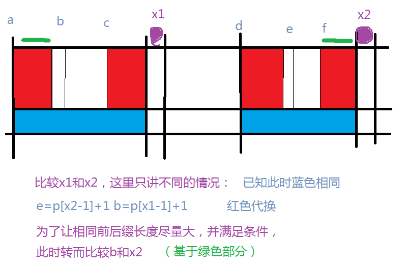
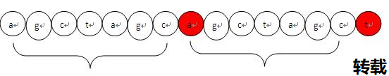
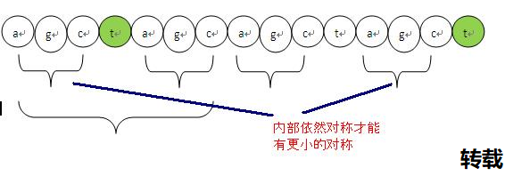
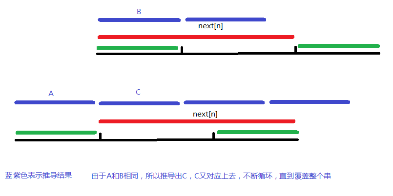
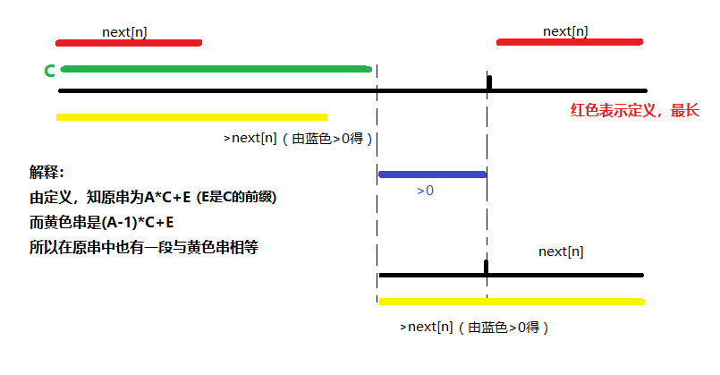

一、说在正文前的小声明
网络上有关KMP的文章灰常多，本文旨在给初学者一个大致理解，
尽量以最简单最直观的方式实现kmp，而不考虑太多有关性能的问题。
参考文献（或者说建议你看看的东西）：
1(并不是他原创，但原文找不到了。。)，用了个图片和栗子
2 栗子比较完整，大家有兴趣可以看看，对本文无用
3 阮一峰，挺好的，用了图片和前后缀角度的看法
4 v_july_v，太强了，堪称完美，建议理解本文后去这里提高，目前我持膜拜状态
5 matrix67，绝对经典
二、定义
Knuth-Morris-Pratt字符串查找算法，简称为”KMP算法”，常用于在一个文本串S(母串)内查找一个模式串P(子串)的出现位置，这个算法由Donald Knuth、Vaughan Pratt、James H.Morris三人于1977年联合发表，故取这3人的姓氏命名此算法。
KMP算法的主要作用在于，计算出字符串B是否为字符串A的子串及其系列问题。
它比简单的暴力算法更优秀的地方在于，当部分匹配失败时，暴力算法一个个字符向前回溯，KMP则通过预先根据字符串B所计算出的”假如我的下一个字符失配，我的新对应位置”（通常用Next数组表示）。由于此预处理过程只是与字符串B有关，所以很适合处理”某个字符串B验证多个字符串A是否是其母串”一类问题。
三、利用Next数组求解KMP
Next的性质（你要是想成定义也行）
（在实现中，通常把Next用其他更简短的单词表示，本文用p）
B[1..p[i]]=B[i-p[i]+1..i]
并且要求p[i]最大，从而让移动距离最小，成功可能性更大并且没有漏网之鱼，类似贪心思想
假设现在字符串A[i-1]匹配成功，字符串B[j]匹配成功
伪代码：
三、Next数组
- 对称不是中心对称，而是中心字符块对称，比如不是abba，而是abab这种对称
- “前缀”指除了最后一个字符以外，一个字符串的全部头部组合
- “后缀”指除了最前一个字符以外，一个字符串的全部尾部组合
那么Next数组究竟怎么求？这也是网络上有关KMP最大的争议。
首先，Next数组有几种定义（这也是为何初学者很容易混淆）。
不过殊途同归，next本质上是相同的~
四、Next的角度1
“最大长度值”是”前缀”和”后缀”的最长的共有元素的长度。
以”ABCDABD”为例。
(个人认为这个也适合作为性质去记忆而非求法，虽然听老师讲了一遍后开始折服于此)
| 序号 | 1 | 2 | 3 | 4 | 5 | 6 | 7 |
|---|---|---|---|---|---|---|---|
| 字符 | A | B | C | D | A | B | D |
| 最大长度 | 0 | 0 | 0 | 0 | 1 | 2 | 0 |
“A”的前缀和后缀都为空集，共有元素的长度为0；
“AB”的前缀为[A]，后缀为[B]，共有元素的长度为0；
“ABC”的前缀为[A,AB]，后缀为[BC,C]，共有元素的长度0；
“ABCD”的前缀为[A,AB,ABC]，后缀为[BCD,CD,D]，共有元素的长度为0；
“ABCDA”的前缀为[A,AB,ABC,ABCD]，后缀为[BCDA,CDA,DA,A]，共有元素为”A”，长度为1；
“ABCDAB”的前缀为[A,AB,ABC,ABCD,ABCDA]，后缀为[BCDAB,CDAB,DAB,AB,B]，共有元素为”AB”，长度为2；
“ABCDABD”的前缀为[A,AB,ABC,ABCD,ABCDA,ABCDAB]，
后缀为[BCDABD,CDABD,DABD,ABD,BD,D]，共有元素的长度为0。
所以，p[i]可以说是从1到i形成的字符串中的最大长度值。
其实与前面说的“s(1,p[i])=s(i-p[i]+1,i)”是一样的
|
|
同样的代码，不同的理解方式。
另一个更贴合本理解的代码
这两份代码可以结合图片理解，i就是x2，j是x1-1

五、Next的角度2
Next数组相当于“最大长度值”整体向右移动一位，然后初始值赋为-1
| 序号 | 1 | 2 | 3 | 4 | 5 | 6 | 7 |
|---|---|---|---|---|---|---|---|
| 字符 | A | B | C | D | A | B | D |
| 最大长度 | 0 | 0 | 0 | 0 | 1 | 2 | 0 |
| Next | -1 | 0 | 0 | 0 | 0 | 1 | 2 |
其实这个角度本质上和上一个一样，只不过这样就能”在j失配时直接对j跳转“而不是”在j+1失配时对j跳转“
《最大长度值》字符串B向右移动的位数[已匹配字符位置-失配字符的上一位字符的最大长度值]
《Next数组》字符串B向右移动的位数[失配字符的位置-失配字符对应的Next值]
上述两个值相等
六、Next的角度3
用一个长长的字符串来解释
| 序 | 1 | 2 | 3 | 4 | 5 | 6 | 7 | 8 | 9 | 10 | 11 | 12 | 13 | 14 | 15 | 16 |
|---|---|---|---|---|---|---|---|---|---|---|---|---|---|---|---|---|
| 符 | A | G | C | T | A | G | C | A | G | C | T | A | G | C | T | G |
| Ne | 0 | 0 | 0 | 0 | 1 | 2 | 3 | 1 | 2 | 3 | 4 | 5 | 6 | 7 | 4 | 0 |
假设当前字符位置i，子串位置j
(1)递推比较
把i与j+1进行比较，如果相等，直接继承为上个Next再+1，因为对称程度增加了。
如果不相等，跳到(2)，很好理解
(2)回头来找对称性

- t如果要存在对称性，那么对称程度肯定比前面这个c的对称程度小。要找更小的对称，必然在对称内部还存在子对称，而且这个t必须紧接着在子对称之后。
- 可以通过循环j=Next[j]不断找更小对称性

个人感觉类似自己匹配自己
七、代码
|
|
检验数据：
Input
alkdfj
haljhdgelqigljafiehiqhroug
sgs
sgsgijosgsjeswsgjjiigj
Output
0
2
八、练习
陶陶的名字
（可以重叠的最小覆盖）
九、kmp与最小覆盖
参考文献：FarmerJohn
定义：
对于一个字符串，一个长度最小的满足
【复制自己多次（不重叠，与陶陶的名字不同）后可以覆盖原串】的子串
结论：
长度=n-next[n]
证明：
先证明它是覆盖子串
①next[n]<=n-next[n]
显而易见覆盖
②next[n]>n-next[n]

然后它也是最小的
这里用反证法，假设存在一个比n-next[n]更小的C（所以蓝色>0），然后截取掉
强行定义一个黄色段，是C的补集，然后因为C会最小覆盖，所以是C的前缀

这样的话，黄色部分比next[n]更长，不满足next[n]是最长这个定义
Q.E.D.